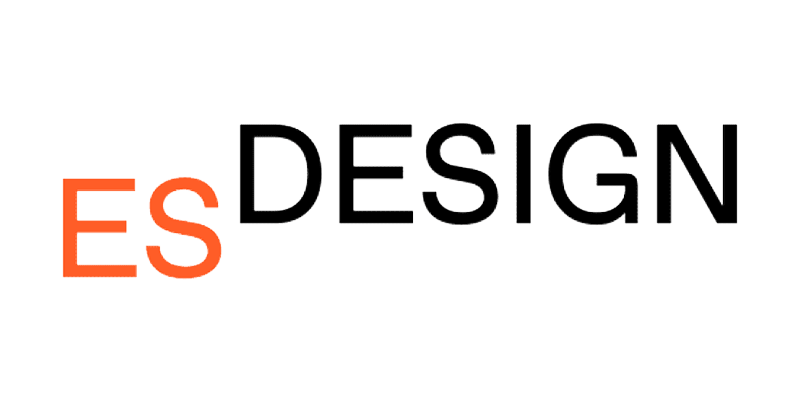

About
¡Hola buenas! Mi nombre es Salvador Ruiz y soy un diseñador gráfico y editor en TendenciasTV. Estudié en Málaga y me gradué del master de diseño y creación de marcas de Moda en ESDESING BARCELONA, lo cual me abrió el camino para montar mi propia marca Young Spanish Artist. Me considero un hombre orquesta ya que mis trabajos abarcan casi todos los ámbitos audiovisuales, desde cartelismo y páginas web hasta arreglos musicales, todo creado dentro de mi estudio en Granada donde teletrabajo.
